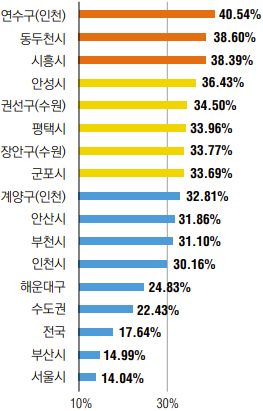
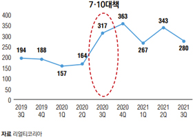

[ WEALTH & ]
Real Estate
2022년 부동산시장은 변곡점을 맞을까
지난해 상반기 뜨거웠던 부동산시장이
하반기에는 다양한 규제 강화와 함께
상승세가 다소 둔화한 모습으로 새해를 맞이했다.
2022년 부동산시장은 어떤 양상을 보일까?
주택뿐 아니라 다양한 수익성 부동산까지, 2022년 부동산시장을 전망해본다.
Writer. 박상욱(우리은행 부동산투자지원센터 팀장) Photo. 셔터스톡
2021년 자산 시장의 키워드는 ‘코로나19’와 ‘유동성’ 두 단어로 요약할 수 있다.
투자자 관점에서 지난 2년의 팬데믹 시기는 투자의 적기였고, 투자 성패 또한 투자를 실행한 자와 실행하지 못한 자로 구분할 수 있다. 그만큼 부동산, 주식, 가상화폐 등 거의 모든 자산의 가격이 급등하면서 투자 실행 여부에 따른 부의 양극화가 심화했다.
Part 1.주택시장
2021년: 공급 부족과 유동성 공급으로 인한 가격 상승
지난해 아파트 가격은 2013년 아파트 가격이 하락에서 상승으로 반전한 이후 가장 높은 상승률을 기록했다. 한국부동산원 자료를 분석한 전국 아파트 매매가격 지수(1~11월) 상승률은 19.43%, 서울은 15.86% 상승했다.
2021년 아파트 가격(11월 기준)이 가장 많이 오른 지역은 인천과 경기 수도권으로 22.43%나 상승했다. 인천 연수구는 40% 넘는 상승세를 보였으며, 개발 호재가 있는 시흥이 38.4% 상승하고, 수원・안산・부천 등도 30%가 넘는 급등세를 보이며 서울 인근 수도권 지역의 상승세가 두드러졌다. 너무 높아진 서울 아파트 가격에 부담을 느낀 실수요자와 투자자들이 인근 수도권으로 밀려난 것으로 분석한다.
이 같은 주택 가격 상승에는 개발 호재도 한몫하지만, 무엇보다 신규 주택 공급 부족을 가장 큰 원인으로 곱을 수 있다. 2021년 수도권 입주 물량은 11만9,000호로 2013년 이후 가장 적은 공급 물량이다. 여기에 20~30대 MZ세대까지 주택 매매시장에 뛰어들면서 공급 부족을 가중했다. 공급 확대 정책(2・4대책)을 발표한 후 3월에서 5월까지 일시적 시장 안정이나 2020년 45% 상승한 세종시와 대구시가 입주 물량 급증으로 2021년 하락세로 반전하는 사례가, 물량 수급이 주택 가격의 주요 원인임을 방증한다.
-
아파트 상슬률 상위 지역
 -
서울 APT 매매가격 추이
종합부동산세 등 부동산 관련 과세 부담 증가와 주택담보대출, 전세자금대출 등
대출 여력 축소에 따른
매수자와 매도자 간 힘겨루기로 가격 상승 폭이 크게
둔화하면서 가격 강보합세가 전망된다.
2022년: 대출 규제 vs 공급 물량 부족
2021년 하반기에 서울 지역은 전례 없는 거래 감소 추세를 보였다. 거래량이 월 3,000건 밑으로 감소했는데, 이는 2018년 9・13대책에 따른 거래량 감소 이후 처음이다. 이번 거래 감소는 장기간 가격 상승에 따른 피로감과 보유세 부담 증가의 원인도 있지만, 무엇보다 가계대출 총량 관리에 따른 주택담보대출 축소가 원인으로 분석된다. 2022년에도 더욱 강화된 차주 단위 총부채원리 금상환비율DSR 적용과 전세자금대출이 가계대출 총량 관리에 포함될 예정이다. 사실 주택담보대출 규제 정책은 이미 수차례 발표했지만, 주택 가격 안정화에 큰 영향을 주지 못했다. 직접적 매매 자금은 차단할 수 있지만, 전세자금대출을 통한 우회 통로로 매매 자금 조달이 가능했기 때문이다. 따라서 새해에 예정대로 전세자금대출이 가계대출 총량 관리에 포함되면 매매시장에까지 영향을 미칠 것으로 예상한다.
부동산시장에 유입되는 유동성은 금융정책을 통해 단기간에 효과를 볼 수 있지만, 신규 주택 공급 물량 확대는 단기간에 해결할 수 없다. 2022년 입주 예정 물량은 전국 30만8,000호로 전년보다 8.6% 증가할 것으로 전망되나 수급 불안을 잠재우기에 충분한 물량은 아니며, 특히 수도권 입주 예정 물량은 14만4,000호로 공급 물량 부족 이슈는 2022년에도 이어질 전망이다.
2022년 주택시장은 신규 공급 물량 부족 등 시장 매물 부족 이슈와 투자자들의 긍정적 투자 심리가 지속되겠지만, 종합부동산세 등 부동산 관련 과세 부담 증가, 주택담보대출과 전세자금대출 등 대출 여력 축소, 미국 자산 매입 조기 종료(3월)와 6월 첫 금리인상(예상) 등 시장 유동성 축소 전망에 따른 매수자와 매도자 간 힘겨루기로 상승 폭이 둔화하면서 가격 강보합세가 전망된다.
서울시 아파트 거래 건수
중소형 빌딩 분기별 거래량(건)
Part 2. 수익성 부동산시장
중소형 빌딩 시장 상승세는 지속
정부의 강도 높은 주택시장 규제 정책이 이어지면서 상대적으로 규제로부터 자유로운 중소형 빌딩 시장으로 투자 수요가 빠르게 유입되었다. 특히 강남의 웬만한 아파트 가격이 20억~30억원까지 오르면서 대출을 활용해 아파트 한 채 매각 자금으로 꼬마 빌딩을 손쉽게 살 수 있게 되었다.
부동산 중개업체인 리얼티코리아 자료에 따르면 다주택자의 세금 규제와 주택임대사업자의 대출 축소가 주요 골자인 7・10대책 이후 빌딩 거래량이 2배 이상 급증하는 추이가 관찰된다. 이후 유동성이 공급되면서 중소형 빌딩 시장의 투자 열기는 주택시장보다 뜨거운 상황이다. 강남 3구는 물론 서울 전역으로 매수세가 확대되고 있으며, 매물보다 매수세가 급등하면서 매도자가 가격을 계속 올릴 수 있는 절대적 매도자 우위 시장이 형성되고 있다.
중소형 빌딩 투자 수요는 2022년에도 이어질 것으로 예상한다. 당장 인플레이션으로 화폐가치가 하락하면서 실물인 부동산 투자에 대한 수요는 증가하고, 주택과 다르게 중소형 빌딩에 대한 대출 규제는 예정된 것이 없기 때문에 투자 여건은 양호한 상황이다. 다만, 기준금리가 1%대로 진입하면서 중소형 빌딩의 가격 상승 폭은 다소 축소될 것으로 예상하지만, 현재 중소형 빌딩의 투자 목적이 임대 수익보다는 시세 차익에 대한 기대가 큰 만큼 1~2회의 추가 금리인상에도 가격 상승은 이어질 것으로 전망한다.
오피스텔 가격 상승세 감소
정부의 강도 높은 주택시장 규제 정책이 이어지면서 상대적으로 규제로부터 자유로운 중소형 빌딩 시장으로 투자 수요가 빠르게 유입되었다. 특히 강남의 웬만한 아파트 가격이 20억~30억원까지 오르면서 대출을 활용해 아파트 한 채 매각 자금으로 꼬마 빌딩을 손쉽게 살 수 있게 되었다.
부동산 중개업체인 리얼티코리아 자료에 따르면 다주택자의 세금 규제와 주택임대사업자의 대출 축소가 주요 골자인 7・10대책 이후 빌딩 거래량이 2배 이상 급증하는 추이가 관찰된다. 이후 유동성이 공급되면서 중소형 빌딩 시장의 투자 열기는 주택시장보다 뜨거운 상황이다. 강남 3구는 물론 서울 전역으로 매수세가 확대되고 있으며, 매물보다 매수세가 급등하면서 매도자가 가격을 계속 올릴 수 있는 절대적 매도자 우위 시장이 형성되고 있다.
중소형 빌딩 투자 수요는 2022년에도 이어질 것으로 예상한다. 당장 인플레이션으로 화폐가치가 하락하면서 실물인 부동산 투자에 대한 수요는 증가하고, 주택과 다르게 중소형 빌딩에 대한 대출 규제는 예정된 것이 없기 때문에 투자 여건은 양호한 상황이다. 다만, 기준금리가 1%대로 진입하면서 중소형 빌딩의 가격 상승 폭은 다소 축소될 것으로 예상하지만, 현재 중소형 빌딩의 투자 목적이 임대 수익보다는 시세 차익에 대한 기대가 큰 만큼 1~2회의 추가 금리인상에도 가격 상승은 이어질 것으로 전망한다.
오피스텔 매매가격 지수 추이
준공업지역 & 도심 단독주택 가격 상승과 수요 증가
준공업지역은 서울 부동산 용어 사전에 따르면 ‘경공업 그 밖의 공업을 수용하되 주거 기능・상업 기능 및 업무 기능의 보완이 필요한 지역’이다. 서울에서는 성수동과 구로구, 영등포구 등이 대표적 준공업지역이다.
준공업 지역이 주목받는 이유는 과거 공장 지역이라 기피 대상이었지만, 도심 내 공장이 도시 외곽으로 이전하면서 주거와 상업 기능으로 대체되는 추세이며, 주거・오피스・판매 시설 등 각종 개발이 수월하게 이루어지기 때문이다. 요즘 수요가 폭증하는 지식산업센터 개발은 물론, 향후 부족한 도심 주거 시설을 공급할 수 있는 중요 지역으로 인식되고 있다. 따라서 향후 이 지역에 대한 개발 수요와 투자 수요 확대로 해당 지역 토지 가격 상승이 지속될 것으로 전망한다.
도심의 오래된 단독주택에 대한 수요도 증가할 전망이다. 이미 주요 지역의 단독주택은 중소형 빌딩(꼬마 빌딩) 개발 수요로 인기가 높다.
여기에 도시형 생활 주택과 소형 오피스텔의 공급을 늘리기 위한 정부의 도심 소형 주택 활성화 대책으로 역세권(500m) 주변의 단독주택지 까지 개발 수요가 확대될 전망이다.
해외 부동산 투자 수요 증가
2022년, 큰 폭의 투자 증가가 예상되는 투자처는 바로 해외 부동산이다. 과거 2년간 사실상 해외 로 이동이 불가능해지면서 억눌려 있던 해외 부동산 투자 수요가 2022년에는 급증할 것으로 예상되기 때문이다. 점점 강화되는 국내 주택 투자 시장 규제와 중소형 빌딩 가격 급등으로 마땅한 투자처를 찾지 못한 투자자들이 해외로 관심을 돌리고 있다. 물론 미국・캐나다・호주・싱가포르 등 주요 투자 국가의 부동산 가격도 국내 못지않게 상승한 부분은 투자에 부정적 요소지만, 다양한 지리적 투자 상품, 분산투자 효과와 달러 자산 투자 효과에 대한 기대는 해외 부동산 투자에서 긍정적 요소로 작용한다. 참고로, 미국 주택 가격은 지난 1년간(2021년 9월 기준) 19.51% 상승해 동기 대비 국내 아파트 시장과 비슷한 상승률을 보였다.
미국 주택 가격 지수